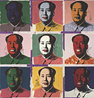
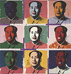
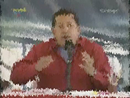
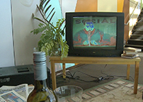
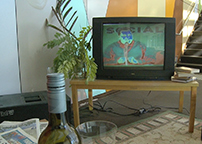
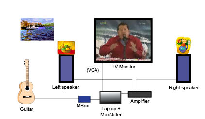
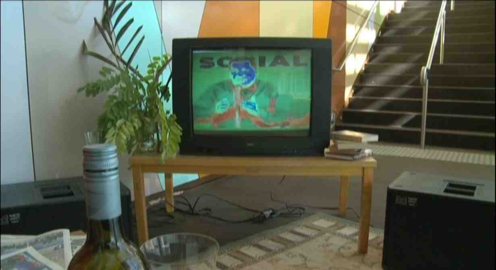
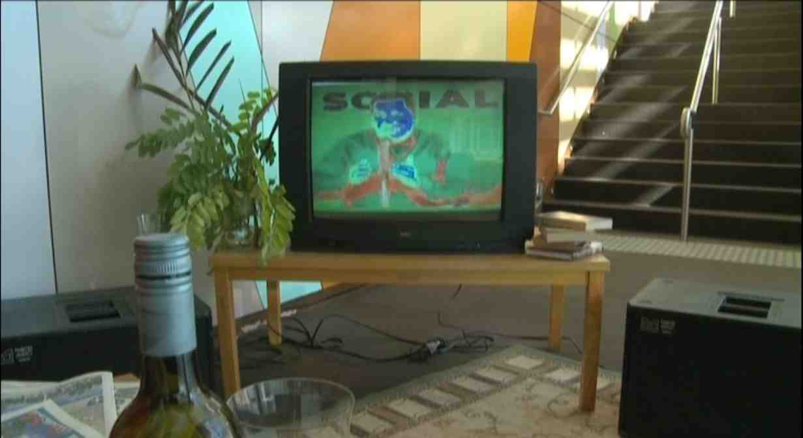

Sin-cadenas.tube
es una instalación audiovisual con la cual se
realiza un concierto en vivo con una
ambientación de sala casera con televisión. Es
una alegoría de los sonidos, imágenes y objetos
presentes en cada hogar venezolano por más de
diez años y los sentimientos de impotencia
desesperada que surgen en esta situación en más
de la mitad de la población de un país: una
televisión con la imagen del Presidente Chávez y
su voz interminable, en lo que se conocen como
"cadenas." Cuando se imponen las cadenas, todas
las señales de televisión y radio permanecen
conectadas a la misma transmisión oficial por
horas incontables todos los días. En tiempos de
elecciones y hasta el último momento antes de la
votación, las cadenas funcionan como propaganda
electoral oficial sobrepasando el reglamento del
Consejo Nacional Electoral, lo que representa
una abominable ventaja de cobertura de medios
frente a los partidos opositores, con la excusa
de que son anuncios oficiales.
En Sin-Cadenas.tube,
la omni-presencia iconográfica y oral de Chávez en
los medios de comunicación, interrumpiendo programas
habituales constantemente en horas pico de
audiencia, se contrarresta con una grabación del
canto verbal y rápido de mujer (Lennys Astorga),
utilizando frases religiosas (fanatismo versus
fanatismo) y la ejecución en vivo de escalas
diatónicas de la guitarra anclada al metrónomo que,
conectados a través de un laptop con el software
Max/Jitter, afectan gradualmente en tiempo real la
imagen de la cadena. Es una creación videográfica en
vivo, parafraseando a Andy Warhol y su interferencia
visual estética de las imágenes altamente mediáticas
de Marilyn Monroe, Mao, John Lennon, Michael
Jackson, entre otras:
Andy Warhol (cuadros):
 


Sin-Cadenas.tube
(fijos de video/instalación):
  

La instalación se convierte en una protesta
artística dentro de la serie del autor de sus
conciertos-instalaciones "Aprisionamientos",
como una metáfora de la práctica existente en la
actualidad a través del portal YouTube,
donde abundan videos personales sin censura posible
del gobierno venezolano, como una ingenua
alternativa a la necesidad de la libertad de
expresión y selección a escoger lo que se quiere ver
por los medios, que ya en sí han sido prisioneros de
otros intereses comerciales e ideológicos.
Poco a poco, el gobierno de Chávez ha venido
sustituyendo a los medios comerciales por los medios
gubernamentales, quedando sólo una TV de oposición,
Globovisión, que tiene sus días contados. El estado
del país, es decir, la realidad, está reconstruida
completamente por una cortina mediática manipulada
de acuerdo a las necesidades oportunas de tapar
información no deseada con otra (escándalos de
corrupción, desastres de la industria petrolera por
ejemplo), no existiendo manera de saber qué es
verdad y qué no lo es, sino por el mar de
información del Internet, donde, por su vastedad en
desconfianza, nos encontramos también perdidos.
Somos náufragos en un océano de información,
flotando a la deriva en un desierto de verdades.
Se utilizan tres temas que representan el fanatismo
de la cultura venezolana en los ojos de la persona
de la calle y de la televisión, por ser los héroes
mediáticos dentro de un pensamiento orwelliano de
control: el baseball, las misses y las orquestas
juveniles, vestidos con sus banderas tricolor en un
orgullo de espejismo pintado con banalidad de masas.
El rechazo vociferado groseramente por Chávez contra
los Estados Unidos ("el imperio"), nuestro principal
cliente en la industria petrolera del cual
dependemos para el ingreso millonario, es
contrastado por estos mismos tres grandes aspectos
de la cultura venezolana, que son todos provenientes
del imperio, y en el caso de Dudamel y las orquestas
juveniles, su fama ha sido alimentada por ser
director de orquesta en Los Ángeles, ícono del éxito
capitalista con el sello Rólex de aprobado.
De todo el material abusivo, violento y grosero de
Chávez en sus incontables apariciones en televisión,
se seleccionó su reacción agresiva a la primera vez
que perdió un proceso electoral en el referendo para
cambiar la Constitución por una versión
completamente comunista en el 2007. El fanatismo a
su figura promovido por la insistencia mediática,
resultado de la propaganda y de las cadenas
entre otros programas oficiales (como el programa
"Aló Presidente" todos los domingos), llegó al nivel
de alabarlo como semi-Dios por parte de la otra
mitad de la nación, siendo un líder que ejerce una
comunicación imperdonablemente grosera en horario de
todo público, encharcando nuestra dignidad cultural,
nuestro espacio en la casa, nuestro hogar y
familia. Es una
prisión mediática de violencia y grosería.
Instrucciones para la ejecución
La instalación puede ser armada en cualquier
habitación o tarima de concierto, con muebles y
objetos típicos de una sala casera, matas, sillas,
sofá, mesa, lámparas, cuadros, frutas, animales,
acompañante, perrito o gato, flores, periódicos,
vino, cerveza, café, aperitivos, cholas, chucherías
y ha de ser interpretada en directo por un
guitarrista y voz de mujer, o con la voz grabada, o
como un simple video de una ejecución pasada. Los
cantos religiosos de voz femenina y escalas en la
guitarra se realizan con el sonido del metrónomo,
que se establece en tres tempi diferentes:
142, 168 y 214 pulsos por minuto, lo que significa
una condición musicalmente esclavizada con respecto
al tiempo. La guitarra realiza las escalas en
tresillos que simbolizan la esencia rítmica de la
música popular venezolana, que es casi todo en la
subdivisión ternaria de los pulsos (6/ 8). El canto
de la mujer es un rap muy rápido basado en textos
religiosos. La guitarra utiliza todas las doce
escalas diatónicas, cuatro por ajuste de tempo, de
acuerdo a las digitación escrita por el autor de la
pieza, pero también se puede optar por utilizar sólo
una selección de escalas por el guitarrista. En cada
tempo se utiliza una técnica de la mano derecha de
la guitarra diferente, es decir, apoyado o libre
ami, plectro y ligado ascendente como descendente.
En la ejecución, la guitarra toca las escalas hacia
arriba y hacia abajo o alrededor ciertas notas, como
desee el ejecutante, como también puede permanecer
en cualquier grupo de notas haciendo tresillos, pero
debe tener mucho cuidado de no perder la
sincronización con el metrónomo. El autor puede ser
el intérprete de la guitarra, si así se desea.
Alternativa de Video-Arte:
Se ofrece como opción a la instalación y ejecución
en vivo, el video-arte listo. Solicitar por correo-e
el envío del videoarte.
Equipo necesario:
- 1 guitarra con
salida de audio conectada al laptop (USB)
mediante un interfaz I/O análogo-digital (ej:
Mbox)
- 1 monitor de TV, con
conexión VGA o video-beam alternativo o
simultáneo en caso de una sala grande
- 1 amplificador de
sonido (stereo), 2 entradas jack o RCA para
conectar la salida mini-plug del laptop
- 2 alto-parlantes
conectados al amplificador
- 1 laptop (con
Max/Jitter) con salida audio de miniplug
estéreo, o a través de 2x salidas jack del
interfaz
- Cables de conexión,
regleta múltiple para el amplificador, laptop,
monitor o video-beam
- Muebles y objetos
típicos de una sala casera, matas, sillas, sofá,
mesa, lámparas, cuadros, frutas, animales,
acompañante, perrito o gato, flores, periódicos,
vino, cerveza, café, sandwich, cholas,
chucherías.
- Archivos de video,
sonido y el patch de Max en el laptop, que se
solicitan al autor por medio de un correo-e

+ Voz femenina en vivo declamando
frases religiosas + metrónomo en vivo

 
